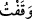

yemîn edilmiş olur. Mânâsı ise ‘Yâsîn’e, yâni Allah Teâlâ’ya yemîn ederim.’ demek
olur.
Hukemâ-i ilâhiyyeden birisi, bu harflerin on dört meleğin isimleri olduğunu
söylemiştir. Nitekim bu konunun açıklaması Şuarâ sûresinin başında geçmişti.
İbn Abbâs (r.a.)’dan rivâyet edilir ki: “Yâsîn, Tayy kabilesinin lügatinde ‘Ey İnsan’
demektir. Bu hitap ile kasdedilen de Rasûlullah (s.a.)’dir.” Müfessirlerin çoğunun
görüşü de budur. Belki de bunun aslı insan kelimesinin tasğîri ile “__WORD__ (Ey
insancağız)”dır. Çünkü bazen tasgîr siygası şefkat/sevgi ve tâzimi göstermek için olur.
Özellikle de tasgîr siygasıyla konuşan Allah Teâlâ olunca. Çünkü Allah Teâlâ ancak
doğru ve hikmet olanı söyler ve yapar. Bu durumda Yâsîn’deki “Yâ” nidâ harfidir.
“Sîn” ise “__WORD__ (üneysîn)” kelimesinin yarısıdır. Arap dilinde böyle nidâlar çok olunca
hafiflik ve kolaylık için bu kelimenin ikinci yarısıyla yetindiler.
Bu hitap, Mustafa (a.s.)’ın sûret ve beşeriyetinedir. Bir başka yerde “De ki: Ben,
yalnızca sizin gibi bir beşerim.” (el-Kehf, 18/110) buyurulması, insanlık ve cinsiyet
sebebiyledir. O insanlara benzemektedir. Bu hitap nübüvvet şerefi ve risâletin tahsisi
sebebiyle insanadır. Ona olan hitap şöyledir:
“__WORD__ (Ey Nebî, Ey Rasûl)” Sûret ve beşeriyet şeklinde olan hitabın
sebebi, gayret hicabı olsun da nâ-mahrem olanlar onun hâl ve kemalinden haberdar
olmasın diyedir. Bu da şairin söylediği gibi şu şekildedir:
Beni arslan olarak çağır da
Kim olduğumu kimse bilmesin
İbnü’l-Hanefiyye’den nakledildiğine göre “Yâsîn” Yâ Muhammed demektir. Allah
Teâlâ’nın bundan sonra “Sen şüphesiz peygamberlerdensin.” (Yâsîn, 36/3) buyurması
buna delildir. Bir hadîste şöyle buyrulmuştur: “Allah beni şu yedi isimle isimlendirdi:
Muhammed, Ahmed, Tâhâ, Yâsîn, el-Müzzemmil, el-Müddessir ve Abdullah.”[98] Ehl-i
Beyt’e “Âl-i Yâsîn (Yâsîn Âilesi)” denilmesi de bunu te’yid etmektedir. Nitekim şâir
şöyle demiştir:
Ey Yâsîn Âilesi, sizin muvaffakiyetiniz Allah’tandır.
Fakir (Bursevî) der ki: “Yâsîn Âilesi” ile Allah Teâlâ’nın bu sûrede yücelttiği
kimsenin âilesinin kasdedilmiş olması da mümkündür. Bu durumda Ehl-i Beyt’e “Âl-i
Yâsîn (Yâsîn Âilesi)” denilmesi bunu te’yid etmez.
Kâşifî der ki: “Hakikat şu ki Arap dilinde bir kelimeyi bir harf ile ifâde ederler.
Meselâ: “__WORD__ (Ben ona ‘dur’ dedim, o da ‘durdum’ dedi)”
Buradaki “__WORD__” harfi, “__WORD__ (durdum)” demektir. O hâlde “sîn” harfi “__WORD__ (Ey efendi),
yani “__WORD__ (Ey beşerin efendisi)” veya